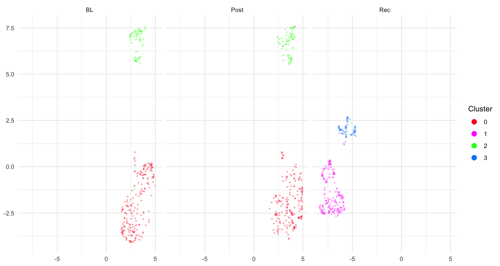

Introduction
This vignette shows how to assign meaningful syllable
identity labels (e.g. a, b,
c, …) to the clusters discovered during segmentation.
Prerequisites: Complete Longitudinal Syllable
Segmentation first, so that
sap$features$segment$feat.embeds contains UMAP coordinates
and cluster assignments.
What you will learn:
- How to inspect raw segment clusters with
plot_clusters() - How to run automatic syllable labelling with
auto_label() - How to refine or override automatic labels with
manual_label() - How to verify the final syllable inventory
Step 1 — Inspect raw segment clusters
Before assigning letter labels it is useful to view how segments are
distributed across clusters. plot_clusters() renders a
heatmap-style raster where each row is a segment and columns represent
time within the motif, coloured by cluster identity.
sap <- sap |>
plot_clusters(data_type = "segment", ordered = TRUE)Inspect the output:
- Tight horizontal bands of the same colour → a well-defined syllable type repeats reliably at a fixed position within the motif.
-
Fragmented colours at the same time position → the
cluster boundaries may be too fine; consider re-running
find_clusters()with a lower resolution. - Columns entirely absent → that time position is not consistently detected; check segmentation parameters.
Step 2 — Automatic syllable labelling
auto_label() performs two-stage DBSCAN clustering —
first in temporal space (position and duration within the motif), then
in UMAP acoustic space — to group segments into candidate syllables
automatically.
Key parameters
| Parameter | Role | Default |
|---|---|---|
eps_time |
Temporal separation sensitivity (smaller → more splits) | 0.1 |
eps_umap |
Acoustic similarity sensitivity (smaller → more splits) | 0.6 |
min_pts |
Minimum points to form a cluster | 5 |
weight_time |
Relative weight of time position vs. duration | 4 |
outlier_threshold |
Fraction of total points below which a cluster is discarded | 0.01 |
umap_threshold |
UMAP distance below which two clusters are merged | 1.0 |
sap <- sap |>
auto_label(
eps_time = 0.1,
eps_umap = 0.6,
min_pts = 5,
weight_time = 4,
outlier_threshold = 0.01,
umap_threshold = 1.0
)The result is stored in
sap$features$syllable$feat.embeds, which contains a
cluster column with integer cluster IDs. Visualise the
auto-labelled clusters:
sap <- sap |>
plot_clusters(data_type = "syllable", ordered = TRUE)Step 3 — Manual syllable labelling
After auto_label() you know how many integer-coded
clusters exist. Use manual_label() to convert those
integers to the letter codes that match your syllable vocabulary.
Option A — Interactive mode
Run in an interactive R session (e.g. RStudio console) to be prompted for each cluster:
sap <- manual_label(sap, data_type = "syllable", interactive = TRUE)
#> Found clusters: 1, 2, 3, 4, 5, 6, 7, 8, 9, 10, 11, 12, 13, 14
#>
#> Cluster 1:
#> Enter letter (a-z): i
#> Cluster 2:
#> Enter letter (a-z): i
#> Cluster 3:
#> Enter letter (a-z): a
#> ...Once you have assigned all letters the mapping is stored inside the SAP object and re-used automatically in subsequent calls.
Option B — Predefined label map (reproducible, recommended)
Build a data.frame mapping cluster IDs to letter labels.
Clusters that share the same letter are treated as the same syllable
type. This approach is fully reproducible without
interactive input.
# Inspect the cluster plot above, then define the mapping
map_df <- data.frame(
cluster = 1:14,
syllable = c("i", "i", "a", "b", "c", "c",
"d", "e", "f", "b", "i", "g", "g", "h")
)
sap <- sap |>
manual_label(
data_type = "syllable",
label_map = map_df,
interactive = FALSE
)Tip: Save
map_dfto a CSV file so you can reload it in future sessions without repeating the labelling step.
Step 4 — Visualise the final syllable inventory
After labelling, inspect the full syllable heatmap and the UMAP coloured by syllable letter to verify consistency across developmental stages.
Heatmap by syllable type
sap <- sap |>
plot_clusters(label_type = "post", ordered = TRUE)In the “post-label” heatmap each colour corresponds to one letter-coded syllable. Consistent banding across all three developmental stages (BL, Post, Rec) indicates stable syllable identity.
UMAP coloured by syllable letter
sap |>
plot_umap(
segment_type = "syllables",
group.by = "syllable",
split.by = "label",
label = TRUE
)
Complete labelling pipeline (copy-paste reference)
library(ASAP)
# -- Assumes segmentation pipeline has already been run --
# -- (see Longitudinal Syllable Segmentation vignette) --
map_df <- data.frame(
cluster = 1:14,
syllable = c("i", "i", "a", "b", "c", "c",
"d", "e", "f", "b", "i", "g", "g", "h")
)
sap <- sap |>
plot_clusters(data_type = "segment", ordered = TRUE) |> # inspect raw segments
auto_label() |> # automatic clustering
plot_clusters(data_type = "syllable", ordered = TRUE) |> # inspect auto clusters
manual_label(data_type = "syllable",
label_map = map_df,
interactive = FALSE) |> # assign letter labels
plot_clusters(label_type = "post", ordered = TRUE) # final verificationAccessing syllable data downstream
All labelled syllables are stored in sap$syllables:
head(sap$syllables)
#> filename day_post_hatch label cluster syllable UMAP1 UMAP2
#> S237_42674.wav 190 BL 4 b -1.23 2.45
#> S237_42674.wav 190 BL 4 b -1.01 2.38
#> ...
# Count syllables per type per developmental stage
table(sap$syllables$label, sap$syllables$syllable)Session info
sessionInfo()
#> R version 4.5.2 (2025-10-31)
#> Platform: x86_64-pc-linux-gnu
#> Running under: Ubuntu 24.04.3 LTS
#>
#> Matrix products: default
#> BLAS: /usr/lib/x86_64-linux-gnu/openblas-pthread/libblas.so.3
#> LAPACK: /usr/lib/x86_64-linux-gnu/openblas-pthread/libopenblasp-r0.3.26.so; LAPACK version 3.12.0
#>
#> locale:
#> [1] LC_CTYPE=C.UTF-8 LC_NUMERIC=C LC_TIME=C.UTF-8
#> [4] LC_COLLATE=C.UTF-8 LC_MONETARY=C.UTF-8 LC_MESSAGES=C.UTF-8
#> [7] LC_PAPER=C.UTF-8 LC_NAME=C LC_ADDRESS=C
#> [10] LC_TELEPHONE=C LC_MEASUREMENT=C.UTF-8 LC_IDENTIFICATION=C
#>
#> time zone: UTC
#> tzcode source: system (glibc)
#>
#> attached base packages:
#> [1] stats graphics grDevices utils datasets methods base
#>
#> loaded via a namespace (and not attached):
#> [1] digest_0.6.39 desc_1.4.3 R6_2.6.1 fastmap_1.2.0
#> [5] xfun_0.56 cachem_1.1.0 knitr_1.51 htmltools_0.5.9
#> [9] rmarkdown_2.30 lifecycle_1.0.5 cli_3.6.5 sass_0.4.10
#> [13] pkgdown_2.2.0 textshaping_1.0.4 jquerylib_0.1.4 systemfonts_1.3.1
#> [17] compiler_4.5.2 tools_4.5.2 ragg_1.5.0 evaluate_1.0.5
#> [21] bslib_0.10.0 yaml_2.3.12 jsonlite_2.0.0 rlang_1.1.7
#> [25] fs_1.6.6